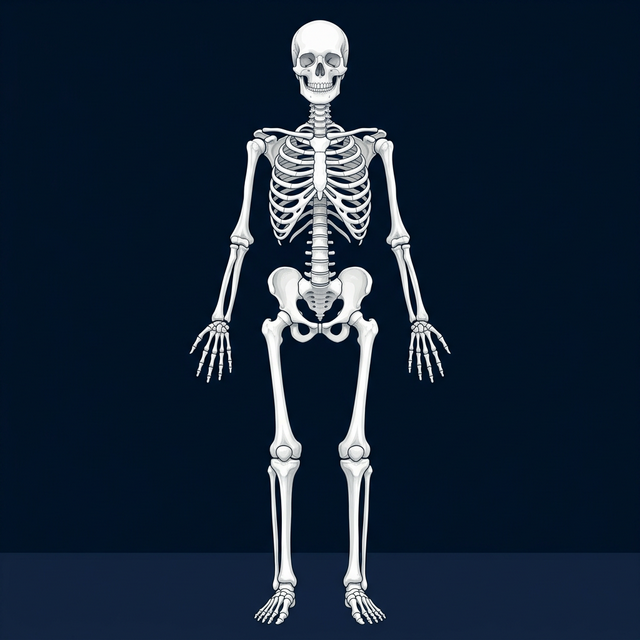
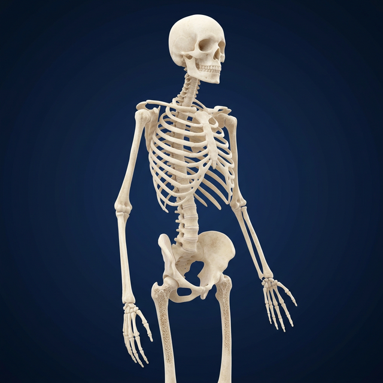
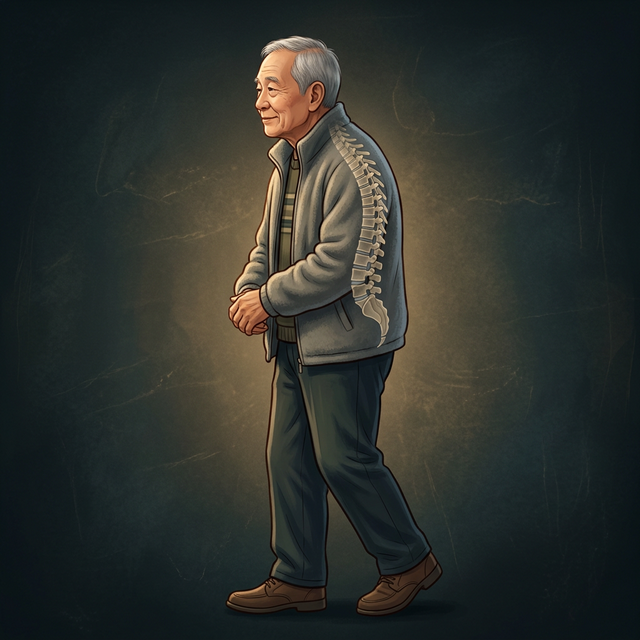
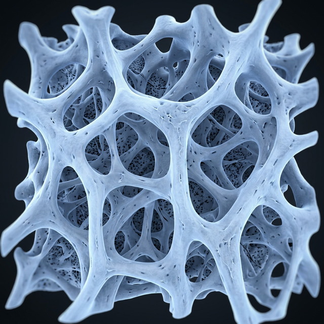
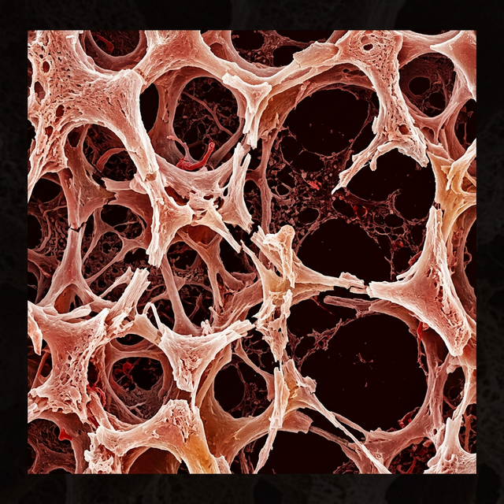

人体是一座精密的建筑
成为更懂老人、更专业的管理者和服务者。
206 块
成人骨骼总数
4 种
基本骨骼形态
3 大
临床常见老化骨骼病变
骨骼分类实验室
骨骼按照形态可分为四类，请将右侧的"积木"拖拽到对应的容器中。
长骨 (A.灵活积木)
呈长管状，一体两端 (如尺骨、掌骨)
短骨 (B.承重柱)
立方形，成群分布 (如腕骨、跗骨)
扁骨 (D.盾牌)
呈板状，参与构成骨性腔隙 (如颅骨、胸骨)
不规则骨 (C.异形件)
形状不规则 (如椎骨、蝶骨)
待分类零件
时光模拟器：骨骼老化演变
拖动时间轴，观察随着年龄增长，人体骨骼发生的结构性改变及其临床影响。
青年期 (25岁)

老年期 (85岁)


致密骨组织

疏松骨组织

结构改变：无机质/有机质比例失衡
25岁时，骨骼致密，富有弹性。
- 骨密度极佳
- 韧性强，抗冲击
体态与脊柱变化
椎体形态正常，序列挺拔。
临床小侦探
结合所学解剖学知识，判断老年人的症状原因，成为专业的指导者。